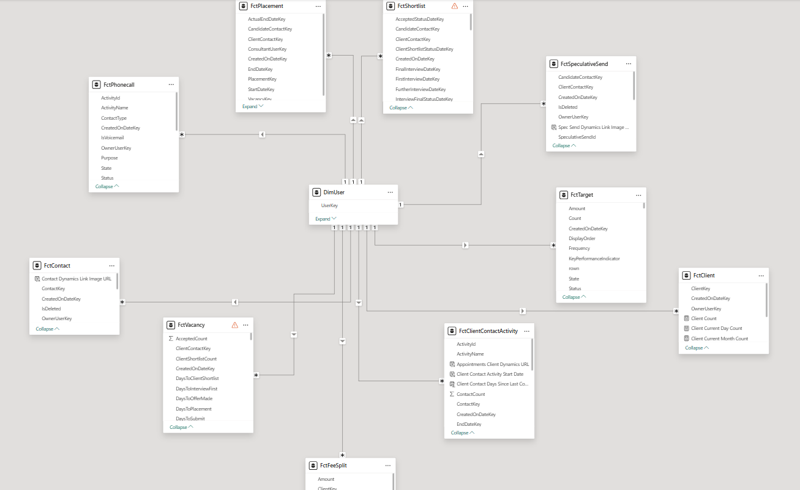
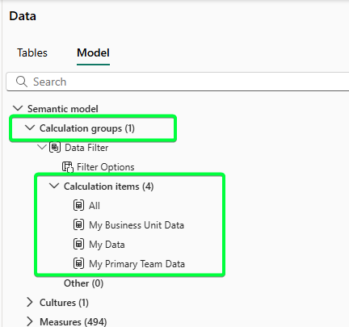
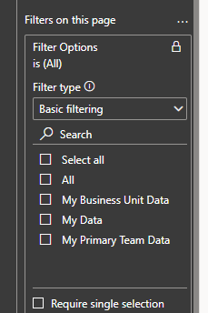

Context
We use Row-Level Security (RLS) across our reporting suite to control the data that the users view. Essentially, a manager sees higher-level data and a consultant will see the detail. We had one persona at a customer who was a manager and alongside their management duties they also were the consultant for a number of cases.
How do we allow a dual-role user such as this to have two different views of the data?
Below is a write up of the investigation carried out:
Problem
At one of our customers we have an individual who is both a senior manager and also a billing consultant.
Because of this, this individual needs access to all reports with company-wide data displayed but also access to the Consultant Dashboard displaying only their data (in their role as a consultant)
As a senior manager, they are in the 'All Data' RLS role so can see all data (no filter is applied to limit any of the data in this particular role). They cannot view the Consultant Dashboard since this is in the Consultant audience in the app and only available to users in the My Data RLS role.
How can they 1) view the consultant dashboard and 2) ensure that when they do it only displays their data?
Investigation
In order to be able to solve this problem, we need to understand what RLS is and how it affects our reports.
Row Level Security (RLS) is the idea of restricting users' access to the data. This is achieved by applying a filter to the dataset using DAX.
The effect of this filter is to limit the rows of each table which are loaded into the dataset and therefore which are used in the report. So the reports and calculations (i.e. measures) run off a slimmed down version of the full dataset.
Static Row Level Security
There are two flavours of RLS. The first one is Static Row Level Security. Here the filter is hardcoded into the DAX expression and will limit the rows in the same way each and every time the data is loaded or refreshed.
An example of this might be a sales dataset where we only want to allow our users to view sales in France. We would then apply a DAX filter stating something along the lines of "where store address country = France". This would then filter to the fact sales table and only sales that happened in France would be loaded into the report and all visuals and metrics would be run off this subset.
Dynamic Row Level Security
The second flavour is Dynamic Row Level Security. Here the filter is dynamic and the data passed through to Power BI will depend upon the user viewing the report / dataset combination.
We usually make use of a DAX formula such as USERPRINCIPALNAME() or USERNAME() to restrict the data being loaded.
So in our case we use USERPRINCIPALNAME() to restrict the user dimension table to return only the user whose email address matches the user who is viewing the report.
And because the user table is related to all the fact tables (see screenshot) this, in turn, means only data related to this user is returned in all the fact tables.

RLS Roles Are Additive
An individual user CAN belong to more than one RLS role. The roles are additive which means that the report will include all the rows filtered by role 1 AND all the rows filtered by role 2.
This is the issue here. Because the individual is a Senior Manager and their role is in the All Data group (technically there is no RLS filter applied in this group - they see all data) this user will always see all data.
RLS Summary
The key thing to remember here is that the limitation happens in the dataset before the report is then hooked up to the data.
In essence, only the data that meets the filter requirements comes in. The rest of the data never leaves the source (the SQL database) and never enters the Power BI ecosystem.
RLS is used for security and data protection so that employees do not have access to data that they shouldn't. Because the data never enters Power BI, there is no danger that they could view unauthorised / confidential data.
What this also means is that there is nothing that can be done at report level to "uncover" data that the user couldn't see because of RLS. Techniques such as filters or bookmarks or anything like that will not allow access to hidden data.
As far as Power BI is concerned the user is already viewing all the data available.
Options
1. New Dataset
With the above in mind and assuming that we are keeping RLS, there is no way that one user can be part of two RLS roles and see different "cuts" of the data depending on the report that they are viewing.
One possible way around this problem is to clone the dataset and hook up the Consultant Dashboard to that copied dataset. All other reports stay hooked up to the original dataset.
I envisage this would work in a similar manner to this:
- Clone the existing dataset.
- Remove all RLS rules from cloned dataset.
- Apply only the MyData RLS role to the cloned dataset.
- Point only the Consultant Dashboard to the cloned dataset.
- All other reports remain untouched.
- The cloned dataset and Consultant Dashboard are published into the existing workspace.
- The new Consultant Dashboard is then added to the existing Power BI app and available to both Consultant and Manager audiences.
Effort and Effect
Since we are cloning the dataset, all the measures and calculated columns would be copied also. In addition as we are re-pointing the Consultant Dashboard report to a dataset which is identical to the original, I would anticipate there would be no breakages and the report would work straightaway.
So, other than some work on the RLS filters, I don't believe there would be any additional Power BI dev work required to make this change. There will be a small amount of work publishing to the workspace and updating the Power BI app.
The advantages would be:
- Consultants open the Consultant Dashboard and only see their data (due to MyData RLS restriction).
- Senior Managers will be able to view all data in all reports (as they can now).
- Senior Managers who are also consultants will view only their data in the Consultant Dashboard.
- Consultants cannot see data they shouldn't.
- Scalable: If there are any more dual-role users, RLS will automatically ensure they can see the relevant data in the relevant report.
- The fact that two datasets are in use is abstracted away from the user.
The disadvantages would be:
- Senior Managers who are not consultants will be able to view the Consultant Dashboard but it will be blank because there will be no matching data once RLS is applied.
- We will need to manage two datasets and ensure they are in sync in terms of any data changes that might affect the Consultant Dashboard (new or amended measures, calculated columns, relationships, tables).
- Since we are managing two datasets we need to ensure they are in sync in terms of refreshes. If they are not, a user might see mismatched data between reports.
- The above two points also mean testing will be a bigger job going forward since there are two datasets in play and we need to ensure they are in sync.
- A duplicated dataset means more storage required in the workspace. Would this be a problem for our bigger customers from a capacity point of view?
2. Remove RLS and Use a Filter
Could we remove RLS altogether from the model? The idea being that, instead of limiting the data that flows into Power BI, it would instead be restricted at report-level rather than dataset level (using a filter / slicer or similar). Something along the lines of:
- Remove existing RLS rules from dataset.
- Create a calculation group (can be done directly in Power BI desktop).
- Add calculation items to the calculation group - one for each RLS role.
- Add the calculation group to the filter panel (under "Filters on all pages" and select relevant role.
This is perhaps best illustrated with an example.
In Power BI we create a calculation group with 4 items each mirroring the RLS roles we previously had:

We can then add the calculation group to the filter panel and select the relevant slicer choice(s) on a report by report basis. So in essence a "default" selection would be made and saved with the report.

Dual Purpose Reports
However for dual purpose reports which are accessed currently by more than one role i.e. both Managers and Consultants have access, this "default" selection would need more careful consideration.
Most reports are viewed by both Managers and Consultants with the Managers seeing their team's data in the report whereas the Consultants only see their data. This is done by placing individuals in different RLS roles so that when they view the report, the report contains a different "cut" of the data - either their team's data or solely their data.
This would be difficult to mimic at report level using the approach outlined. Naturally you would think that you could just apply the two filters at the same time (My Data and My Primary Team Data). The issue here is that the less restrictive filter My Primary Team Data over-rides the My Data filter and every consultant would see all team data.
There are two options to address this:
- We create two versions of the report, one with the My Primary Team data applied and put this in the Manager's audience. Then a second version with the My Data filter applied and put this in the Consultant's audience.
- If we could identify whether an individual is a manager or not, then we can reference this in the DAX and code it in such a way that it filters the data dynamically based on role. This would then mean the report is effectively identifying whether the user is a Manager or a Consultant and displaying the correct data accordingly.
Effort and Effect
This would solve the problem of a dual-role senior manager not being able to view the Consultant Dashboard.
We would simply remove the RLS and create the calculation group and set the default for the Consultant Dashboard report to be My Data. We can then lock and hide this filter so the users can't change it.
Then when a consultant logs in to the report, the calculation group takes effect and all the measures will be calculated in the context of the user's data only.
This feels like a good approach, however there are issues:
- The underlying data is not secure and users could view other users' data (by, for example, downloading the .pbix file or using the Analyse in Excel functionality).
- For a senior manager who is not a consultant, they would have access to the Consultant Dashboard but would see no data.
- How do we identify the user's role from the data? There is no [IsManager] column in the systemuser table.
Summary
The problem statement can't be solved using RLS on one dataset. This is because RLS happens at the data level prior to reaching Power BI and if one user is in two RLS roles their view would be the combination of all data (table rows) which meet either of the criterion of the two roles. More specifically this is problematic here because in one of the two roles, the user has access to all the data.
There are two imperfect approaches to solve the problem. The first is to clone the dataset and have the one report run off the new cloned dataset. We would also need to remove all RLS from this cloned dataset except the rule for the My Data RLS role. I think in the Power BI app, you would also need to add the security group XXX_Reader_MyData to the Manager audience and the dual-role user should be added to this group.
The second option above also works - removal of RLS and addition of filters using calculation groups. However this has issues as detailed above for reports which have a dual purpose for Managers and Consultants in identifying which role the user belongs to.
Other options considered but discounted:
- More nuanced RLS roles using more complex DAX to filter
- Hybrid RLS roles and calculation group approach
- Bookmarks to toggle views
Cannot solve the issue that the senior manager wants to be a senior manager when viewing some reports but a rep when viewing others.
Once data is filtered out by RLS cannot be recovered by DAX or anything else in report. Or by the report context.
This would mean every measure would need to be re-written as "if toggle = 'Rep' then calculate the original measure only considering those vacancies/placements/activities etc that have that rep as the owner. Otherwise return the original measure".
Biggest issue here is the scalability - we would need to change every measure in every report. In addition this is a security risk - a consultant could easily mimic a manager by selecting "Manager" on the toggle and view manager-level data.What Happened Next?
Neither of the imperfect approaches was taken up. The organisation chose to live with the limitation rather than accept the trade-offs.